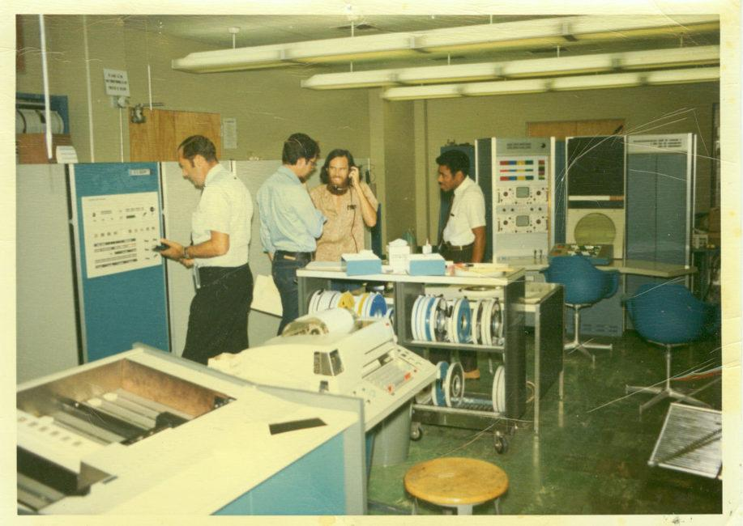
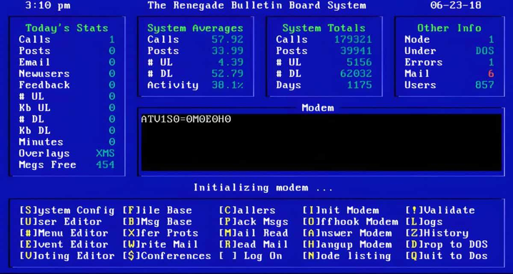
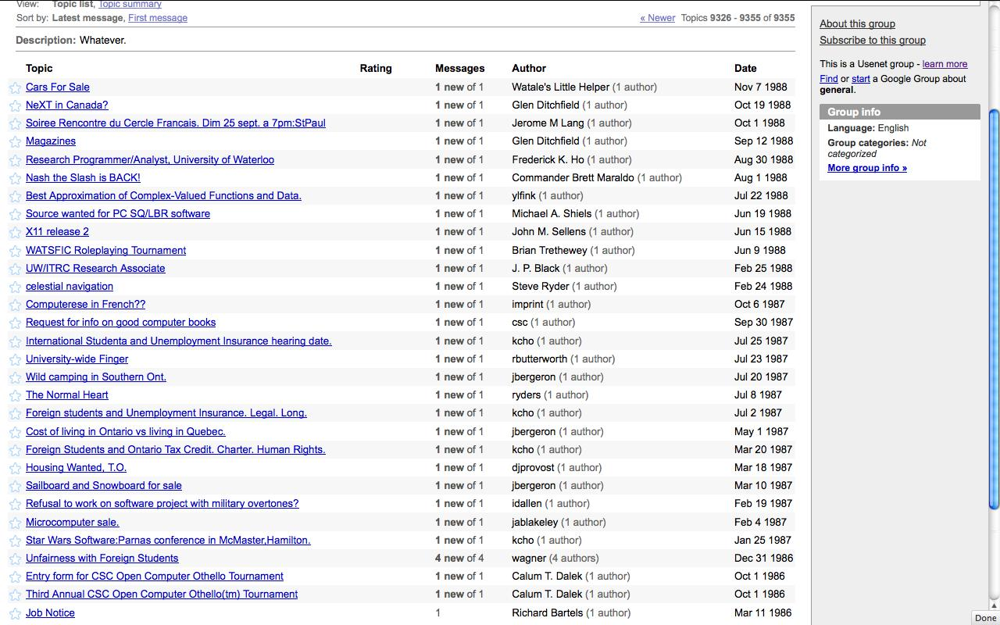
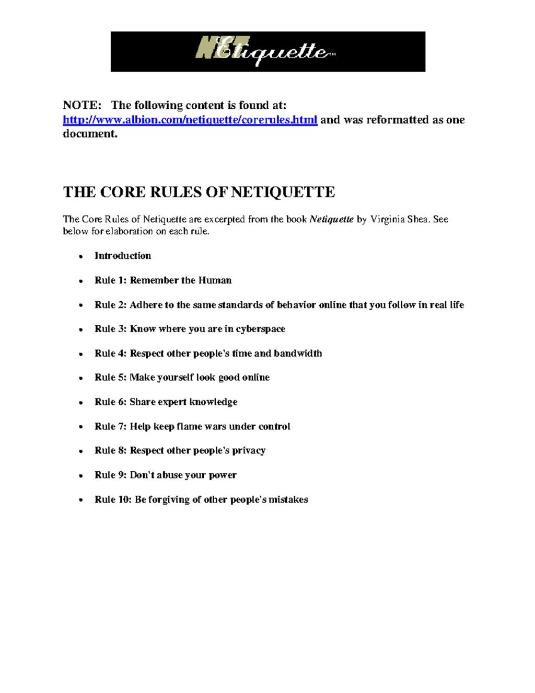
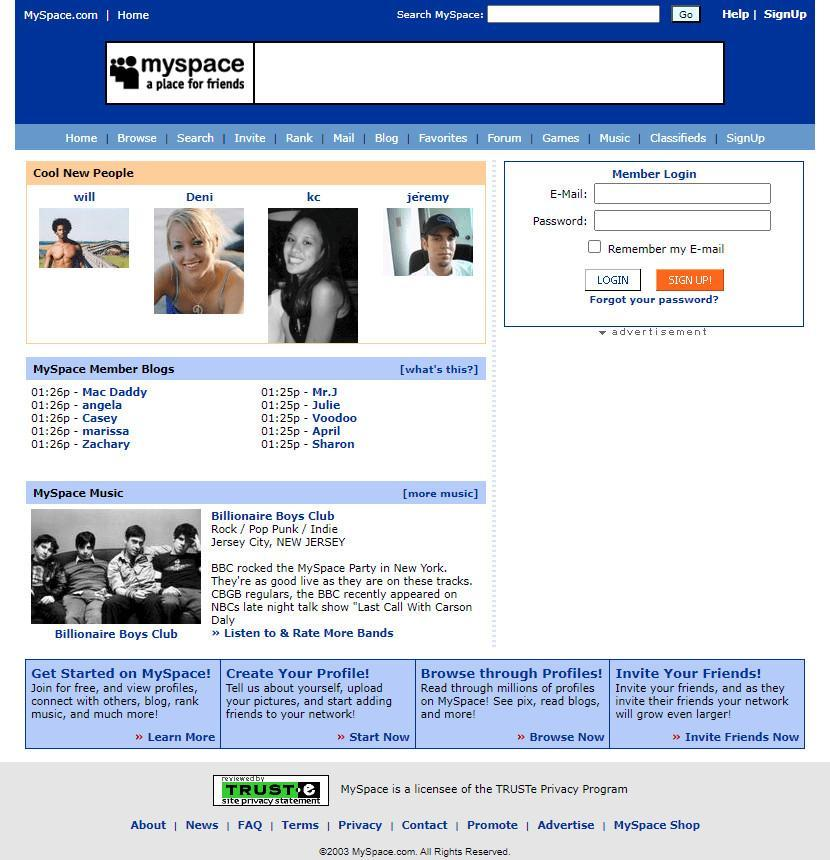
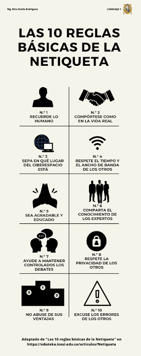
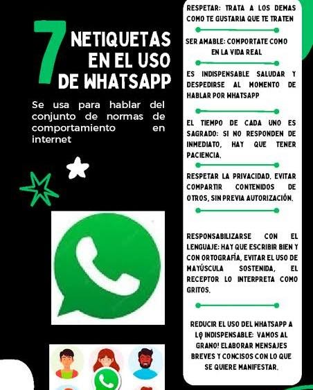
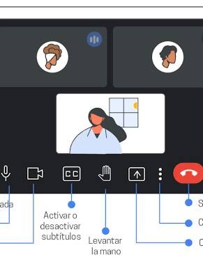

Selecciona una opción del menú superior para explorar el contenido de cada sección.
Las netiquetas, una combinación de las palabras "net" (red) y "etiqueta", son un conjunto de normas y comportamientos recomendados para interactuar de manera adecuada y respetuosa en el entorno digital.
Estas reglas no están escritas en piedra, pero son ampliamente aceptadas como buenas prácticas para mantener la cortesía y la eficacia en la comunicación online.
Las netiquetas abarcan desde cómo redactar correos electrónicos de manera profesional hasta cómo interactuar en redes sociales y foros en línea. Su objetivo principal es promover la convivencia.
La Netiquette o netiqueta surgió en respuesta al incremento y expansión de usuarios en la red, ya que en un principio las redes computacionales fueron limitadas al uso de centros de investigación científica principalmente y su fin era compartir datos de manera práctica y sencilla pero con el paso del tiempo...

Se crea ARPANET, antecedente de internet. Comienza la comunicación entre computadoras.
Se envía el primer correo electrónico, dando paso a nuevas formas de comunicación digital.

En foros y grupos de discusión, los usuarios comienzan a crear reglas para mantener una comunicación respetuosa.

Comienza a utilizarse el término netiquette para referirse a las normas de comportamiento en Internet.

El IETF publica el RFC 1855, "Netiquette Guidelines", uno de los documentos más importantes sobre las normas de comportamiento en Internet.

Con el crecimiento de chats, blogs y redes sociales, las netiquetas se vuelven cada vez más necesarias.
Las normas se aplican a WhatsApp, Facebook, Instagram, TikTok, correo electrónico y otras plataformas para promover una comunicación respetuosa, segura y responsable.

Asunto claro, saludo y despedida formal, evitar enviar archivos muy grandes sin consultar antes.
Pedir permiso en fotos, cero insultos, pensar antes de publicar contenidos que dañen a otros.

Evitar escribir en mayúsculas, respetar el tiempo y no enviar audios excesivamente largos.

Silenciar el micrófono cuando no hables para no interrumpir con ruido ambiental.
Mejora la convivencia: Fomenta el respeto mutuo y reduce los conflictos en línea.
Evita malentendidos: Aclara el tono de los mensajes mediante una comunicación clara.
Protege la privacidad: Cuida los datos personales propios y los de otras personas.
Subjetividad: Lo que para una persona es grosero, para otra puede ser una broma.
Exceso de rigor: Puede limitar la espontaneidad y libertad de expresión informal.
Falta de regulación real: No existen castigos formales o universales por incumplirlas.